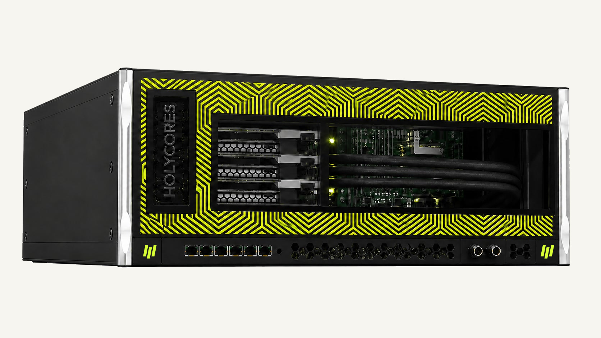

4U COMPUTE NODE
GALAXY G8
A modular node for development, fine-tuning and enterprise inference, planned for up to eight NOVA accelerators with high-speed fabric and liquid-cooling readiness.

CLOUD AI SYSTEM
A scalable cloud AI system for production workloads.
GALAXY SYSTEMS
A modular node for development, fine-tuning and enterprise inference, planned for up to eight NOVA accelerators with high-speed fabric and liquid-cooling readiness.

Compute nodes, switching, liquid distribution, telemetry and management integrated into a complete rack for scale training and production inference.
COMPARE GALAXY SYSTEMS
| Planning dimension | GALAXY G8 | GALAXY G36 | GALAXY G72 |
|---|---|---|---|
| System format | 4U compute node | Half-rack integrated system | Full-rack integrated system |
| Target accelerator scale | Up to 8 | Up to 36 | Up to 72 |
| Fabric level | In-node PCIe + HC-Fabric | Two-tier scale-out network | Rack-wide non-blocking plan |
| Cooling | Air / liquid options | Liquid preferred | Rack liquid and thermal control |
| Management boundary | Single node | Rack zone | Unified full-rack management |
| Target workloads | Development, tuning, inference | Private AI, scale inference | Training, tuning, production |
Planning targets may change after card, network, power, cooling and facility validation.
Reuse model and operator work across deployment targets.
Co-design compute, fabric, cooling, and operations around real workloads.
Start with validation, then expand to clusters and edge fleets.
Every engagement connects architecture, software, validation, and production operations.
ENGAGEMENT MODEL
FAQ
These pages describe product direction. Availability, specifications, and schedules will be confirmed in formal product materials.
It reduces repeated engineering when models move between deployment environments.
The planned path starts with development and validation before scaling to production.
CHOOSE YOUR PERSPECTIVE
Understand platform scope, deployment choices, and the long-term path.
Follow this path →Evaluate compute, fabric, software, operations, and facility constraints.
Follow this path →Focus on model entry points, operators, tooling, and portability.
Follow this path →TECHNICAL EVALUATION
| Dimension | Question | Validation |
|---|---|---|
| Compute architecture | Adapt to different models and precision strategies | Build utilization and accuracy baselines with representative workloads |
| Memory hierarchy | Reduce avoidable movement and bandwidth stalls | Profile working sets and end-to-end bottlenecks |
| Scale-out fabric | Grow from device to node and cluster | Validate topology, communication, and scaling efficiency |
| Software stack | Map framework models reliably to hardware | Check coverage, correctness, and tunability |
| System engineering | Balance power, cooling, density, and serviceability | Validate against the target facility and workload |
| Operations | Deploy, observe, upgrade, and diagnose | Establish telemetry, health, version, and rollback workflows |
WORKLOAD MAP
Throughput, communication, precision, and long-run stability.
Response time, generation rate, concurrency, and utilization.
Data boundaries, operational control, auditability, and lifecycle.
Local latency, power, interfaces, and environment.
ADOPTION PATH
Create a baseline with representative models and evaluation systems.
Integrate with customer security, datacenter, and operational practices.
Expand clusters or edge fleets against capacity and service goals.
PRODUCTION READINESS
Health, fault isolation, recovery, and long-run validation.
Boot, identity, access, update, and data-boundary planning.
Telemetry that connects model behavior to system state.
Versioning, compatibility, rollback, maintenance, and support.
RESOURCES & STATUS
Product direction, architecture principles, workloads, and evaluation framework on this site.
Workload definition, environment requirements, success metrics, and test planning.
Specifications, compatibility, SDKs, docs, release notes, and validated model status will follow maturity.
Compute, fabric, cooling, and system software operate as one platform.
One environment supports the full model lifecycle.
READY TO BUILD?